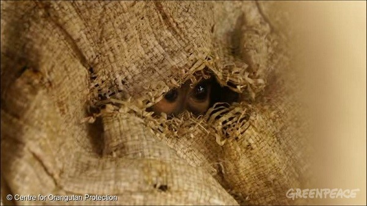
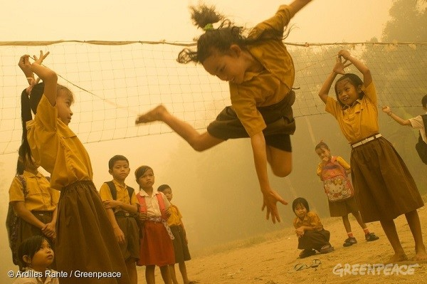

撥開印尼霧霾，揭露棕櫚油來源
超市貨架走一回，食品如巧克力、日用品如洗髮精等，都使用價格低廉且保質長久的棕櫚油生產。不過，當知名品牌對棕櫚油生產商的毀林行為視若無睹，感覺清爽與甜美之間，可有隱約嘗到血與淚？
印尼佔全球棕櫚油市場比率55%，說棕櫚油是經濟命脈之一也不為過。資料顯示，印尼雨林在1990至2015年間以年均2,400萬公頃速度消逝，已超越巴西擁有這項不名譽紀錄。單單計算2012至15年，每25秒就有一個足球場大小的雨林倒下，導致珍貴物種淪為瀕危。婆羅洲紅毛猩猩在20年間數目減半至10萬隻，蘇門答臘虎更只剩兩個健康野生繁殖族群。

這隻紅毛猩猩在家園被毀下倖免於難，暫住東加里曼丹省的救援中心。
經濟與保育從來並非對立，與當地人權及農民生計更是密不可分，尋求永續發展的「不毀林、不開墾泥炭地、不侵害人權」（NDPE）逐漸成為消費者共識：
- 不以大規模焚燒方式清空泥炭地
- 不掠奪農民土地
- 不破壞珍貴物種家園
- 鼓勵復育被焚燒的雨林及泥炭地
- 保障受僱種植園工人權益
- 遵守當地法規，確保生產鏈資訊公開、透明
不過，棕櫚油及紙漿企業藉焚毀雨林與泥炭地開墾種植園的「焦土」方式，依然是綠色和平與當地社群組成雨林救火隊的最大敵人。2015年最嚴重一次，導致毒霧籠罩東南亞，造成10萬人因相關疾病早逝，以及高達160億美元經濟損失。
說好的2020承諾？

2015年印尼大火爆發，學童只能忍受泛黃霧霾，努力如常生活。
因此，從根源解決問題，紡織業界除了展開「無毒生產」，也必須改變其商業模式，包括重新設計產品和改變生產模式，重新定位營銷策略，扭轉地球資源瀕臨崩潰的困局。企業應減少整體產量，鼓勵消費者選擇更耐用和容易修補的衣服，如提供維修服務、加強並完善回收系統等。
全球超過500個知名品牌近年相繼作出 NDPE 承諾，於2020年或之前確保棕櫚油生產鏈與毀林行為劃清界線。距離限期已經不遠，破壞卻未曾停歇，各大品牌甚至連棕櫚油來源也拒絕公開，談何守護雨林？綠色和平年初向16個採購印尼棕櫚油的全球知名品牌「下戰書」，要求它們公開棕櫚油生產及供應商名單，並於兩個月後發表《真相時刻》報告指出，
部份企業拒絕公開棕櫚油來源，讓公眾蒙在鼓裡，無從選擇及監督品牌，距離百分之百乾淨棕櫚油承諾更是遙遙無期。
報告發表前公開來源：雀巢 Nestlé、聯合利華 Unilever、高露潔棕欖 Colgate-Palmolive、億滋國際 Mondelēz、寶僑家品 Procter & Gamble、利潔時 Reckitt Benckiser、General Mills、Mars（8間
報告發表後公開來源：費列羅 Ferrero、百事可樂 PepsiCo、PZ Cussons（3間）
拒絕公開來源：家樂氏 Kellogg's、卡夫亨氏 Kraft Heinz、嬌生 Johnson & Johnson、Hershey、Smucker's（5間）
這些國際品牌身為棕櫚油買家，往往將監管責任諉過於「中間人」貿易商（traders），卻未曾要求對方呈交油棕樹種植地圖等基本數據。而綠色和平最近評比10間貿易商能否履行 NDPE，結果全數表現不如理想，讓監管機制形同虛設。另外，每當媒體或非政府組織揭發毀林及血汗勞工醜聞，品牌只會推諉為「個別事件」，而不是採取實質行動，中止與違規生產商的合作。
一路向東的雨林傷痕
當企業接連以不永續的方式發展棕櫚園，土地資源終有窮盡一日，只能開墾新「地盤」。繼西部蘇門答臘、中部加里曼丹後，大規模砍伐雨林的臂爪延伸至東部巴布亞省（Papua）。這裡孕育着超過600種珍貴鳥類、瀕危紅毛猩猩與樹袋鼠（Tree Kangaroo），是全球原始雨林的最後樂土之一。
不過，綠色和平透過衛星影像分析及實地考察，揭露向 Mars、雀巢、百事可樂及聯合利華等知名品牌供應棕櫚油的企業 Hayel Saeed Anam Group（HSA），2015至17年間最少在 PT Megakarya Jaya Raya 特許經營林地砍伐4,000公頃珍貴雨林（相當於半個巴黎面積），更牽涉部份明文禁止進一步發展的保護區範圍！有鑑於2015年大火一發不可收拾，印尼政府翌年決定劃出保護區，並在2017年頒布受保護泥炭地地圖，但從我們拍攝的影像所見，曾經綠地空餘灰燼，樹木脆弱如火柴枝倒下。
歐洲議會早前以保護環境為由，通過2021年起禁止在生物燃料使用棕櫚油，惹來主要棕櫚油出口國印尼及馬來西亞批評，印尼海洋事務部長 Luhut Panjaitan 先前走訪歐洲尋求解決方案。貿易紛爭眾說紛紜，但印尼當局必須加強監管棕櫚油企業的毀林行為，卻是不爭事實。零售品牌亦應從公開棕櫚油供應來源做起，進而釐清生產鏈是否破壞雨林，並訂立機制與毀林供應商斷絕來往，確保2020年把 NDPE 付諸實行。
2017年，綠色和平和您一起成功推動匯豐銀行拒絕為毀林企業融資，以及全球第三大棕櫚油企業 IOI 承諾保障農民及勞工權益，感謝您與公眾力量並肩作戰！綠色和平將繼續調查企業毀林真相，積極遊說政府加強保護珍貴森林，誠邀您加入守護森林陣線，一同愛惜地球綠肺。
延伸閱讀：（英文）報告
《真相時刻》 （Moment of Truth）